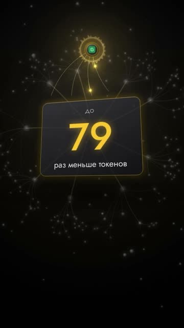
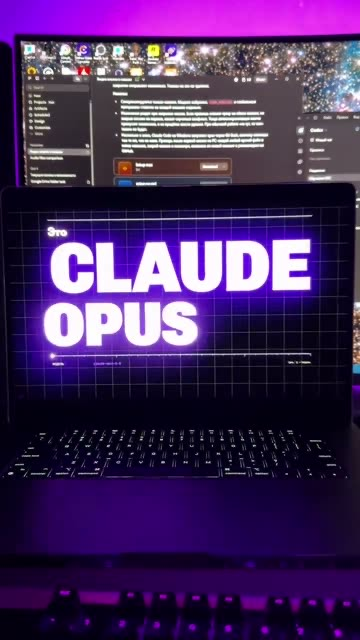
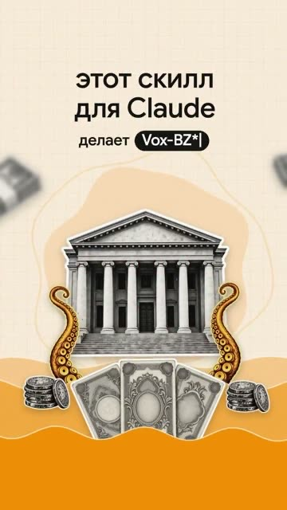
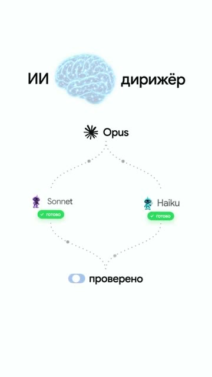
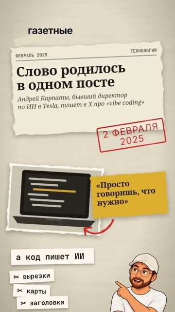
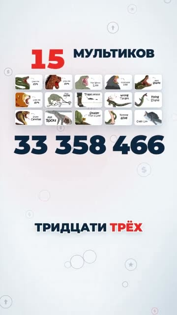
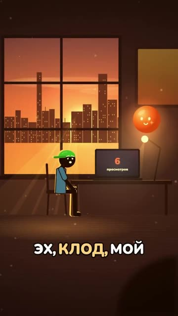

поток 1
Реклама YouTube
1 000 000 просмотров ÷ 1 000 × 5 $ = 5 000 $
Предложение партнёру · ноябрь 2026
Это инфобизнес на роликах. 10 англоязычных тем, в каждой свой YouTube-канал и своя воронка с недорогим продуктом около 10 $. Ролики без ведущего в кадре делает наша фабрика на ИИ-агентах, она уже работает.
Вы доплачиваете команде до 3 500 $ в месяц, пока сеть не начнёт платить ей сама. Всё, что сеть заработает сверх этого, идёт вам, пока вложенное не вернётся. Потом вам 30% прибыли каждый месяц.
Рабочий сценарий модели. Выплаты включают возврат вложенного. Доходность не гарантируется.
Каждая тема это маленький инфобизнес: ролики на трёх площадках и своя воронка продаж. Сеть собрана из 10 таких тем.
тема 01 · каждый день
YouTube
1 длинное видео на 8-10 минут и 3 Shorts
те же 3 коротких ролика
TikTok
те же 3 коротких ролика
YouTube-канал
Длинные видео собирают просмотры. Деньги дают реклама YouTube и интеграции.
воронка темы
Воронки и продукты всё время пробуем новые. Оставляем те, что продают.
Ссылка из длинного видео тоже ведёт в воронку. Так один залетевший ролик зарабатывает дважды: на рекламе и на продажах.
× 1010 тем, у каждой свой канал, своя аудитория и своя воронка
длинное видео, YouTubeкороткий ролик, 3 площадкиворонка с продуктом
сроки и суммы · цифры из модели
Один просмотр на YouTube приносит деньги трижды:
10 длинных и 30 коротких роликов в день. Сценарий, картинки и голос делают ИИ-агенты.
Короткие ролики собирают зрителей и ведут их на YouTube.
Длинные ролики. YouTube платит за каждую 1 000 просмотров.
Ссылка в описании ведёт на страницу темы с мини-продуктом.
поток 1
1 000 000 просмотров ÷ 1 000 × 5 $ = 5 000 $
поток 2
1 000 000 просмотров → 100 покупок × 10 $ = 1 000 $
поток 3
10 каналов × 100 $ = 1 000 $
0 $ доход от Shorts, Instagram и TikTok в модели. Короткие ролики работают только на привлечение зрителей.
Маленький цифровой продукт за 10 $ может приносить 2 000 $ в день. Такие продукты мы ищем постоянно, это отдельная охота поверх сети.
Находим боль большой аудитории, которую закрывает дешёвый простой продукт.
Собираем его с ИИ. Программа пишется по описанию словами, за несколько дней.
Делаем много коротких роликов и длинные видео на YouTube про эту боль. Продаём по ссылке.
Смотрим цифры, усиливаем то, что продаёт, и закрываем то, что нет. 10 тем дают 10 гипотез уже на старте.
200 продаж × 10 $ = 2 000 $ в день
2 000 $ × 30 дней = 60 000 $ в месяц
| Покупает | Просмотров в день |
|---|---|
| 1 зритель из 500 | 100 000 |
| 1 зритель из 1 000 | 200 000 |
| 1 зритель из 10 000, как в модели | 2 000 000 |
Если связка выйдет на 60 000 $ в месяц, после налогов и резерва 20% останется 48 000 $. Ваши 30% это 14 400 $ в месяц, когда команду уже кормит основная сеть. До возврата вложенного эти деньги сначала идут на возврат.
В модели и в расчётах на этом сайте этой связки нет.
Мы взяли из базы NexLev каналы, похожие на наши:
Таких в базе 2 471. Мы взяли 188, это первые 100 и все 88, где ИИ делает и картинку, и голос. Доходы ниже это оценка NexLev на 17.11.2026 11.
188 каналов, каждая точка это канал. Доход по вертикали растёт в 10 раз на каждые два деления. Наведите на точку, чтобы увидеть название.
| Возраст канала | Каналов | Из них от 1 000 $ в месяц | Медиана дохода в месяц |
|---|---|---|---|
| до 3 месяцев | 68 | 52 | 1 892 $ |
| 3-6 месяцев | 53 | 39 | 2 287 $ |
| 6-12 месяцев | 49 | 29 | 1 288 $ |
| старше 12 месяцев | 18 | 6 | 744 $ |
В выборке только каналы, которые уже зарабатывают от 300 $. Те, что не взлетели, сюда не попали. Поэтому в нашей модели 4 канала из 10 не зарабатывают ничего.
Все без лица в кадре и сделаны с ИИ. Половина зарабатывает больше 3 141 $ в месяц, 27 из 29 моложе года. 18 каналам не больше 6 месяцев, и они уже зарабатывают от 1 000 $ в месяц. Оценка NexLev на 17.11.2026.
17 072 $ в месяц
12 736 $ в месяц
12 113 $ в месяц
11 652 $ в месяц
10 505 $ в месяц
9 145 $ в месяц
6 276 $ в месяц
6 138 $ в месяц
5 781 $ в месяц
5 219 $ в месяц
5 070 $ в месяц
4 397 $ в месяц
3 800 $ в месяц
3 412 $ в месяц
3 141 $ в месяц
3 023 $ в месяц
2 921 $ в месяц
2 882 $ в месяц
2 457 $ в месяц
2 430 $ в месяц
2 420 $ в месяц
2 287 $ в месяц
2 066 $ в месяц
1 931 $ в месяц
1 899 $ в месяц
1 021 $ в месяц
811 $ в месяц
706 $ в месяц
563 $ в месяц
| Канал | Тема | Возраст | Просмотров в месяц | За 1 000 просмотров | Доход в месяц |
|---|---|---|---|---|---|
| Duke Family Tales | Истории королевских и знатных семей | 2,5 месяца | 1 083 256 | 15,76 $ | 17 072 $ |
| Foresight 20-20 | Здоровое старение, привычки и долголетие 50+ | 3,4 месяца | 2 047 545 | 6,22 $ | 12 736 $ |
| Mysterious Wild West Tales | История и тайны Дикого Запада | 14,4 месяца | 946 335 | 12,80 $ | 12 113 $ |
| Jade Rabbit Hole | Мифы и фольклор | 1,3 месяца | 4 516 350 | 2,58 $ | 11 652 $ |
| Carl Jung Philosophy | Психология через Юнга и философию | 8,5 месяца | 979 952 | 10,72 $ | 10 505 $ |
| Through the Ages | История, длинные документальные ролики | 4,7 месяца | 3 362 295 | 2,72 $ | 9 145 $ |
| The Book Treasury | Саморазвитие по книгам | 4,6 месяца | 637 800 | 9,84 $ | 6 276 $ |
| Joan Whitaker | Жизнь после 50-60, истории для пожилых | 1,3 месяца | 1 050 979 | 5,84 $ | 6 138 $ |
| The Feynman Method | Здоровье и наука простым языком | 6,9 месяца | 602 215 | 9,60 $ | 5 781 $ |
| CITIES UNCOVERED | История городов | меньше месяца | 1 504 100 | 3,47 $ | 5 219 $ |
| BN Animals | Дикая природа и животные | 3,5 месяца | 2 897 269 | 1,75 $ | 5 070 $ |
| Battle Archives | Военная история, длинные разборы битв | 1,2 месяца | 782 338 | 5,62 $ | 4 397 $ |
| Behind the Ordinary | История и повседневное прошлое | 11,7 месяца | 974 342 | 3,90 $ | 3 800 $ |
| Stoic Power Hub | Стоицизм | 9,4 месяца | 372 520 | 9,16 $ | 3 412 $ |
| Hannah Invests | Личные финансы и инвестиции | 4,6 месяца | 298 603 | 10,52 $ | 3 141 $ |
| Unhinged History | Необычные истории прошлого | 10,4 месяца | 345 448 | 8,75 $ | 3 023 $ |
| 12 END | Психология и поведение | 2,2 месяца | 342 047 | 8,54 $ | 2 921 $ |
| Money With Ricky | Личные финансы | 1,3 месяца | 738 901 | 3,90 $ | 2 882 $ |
| Retirement In Confidence | Пенсия и жизнь пожилых | 10,5 месяца | 351 493 | 6,99 $ | 2 457 $ |
| Jungians Study | Психология, юнгианские темы | 3 месяца | 388 755 | 6,25 $ | 2 430 $ |
| Mafia Heart Vault | Криминальные истории и мафия | 3,1 месяца | 174 375 | 13,88 $ | 2 420 $ |
| Hollowbrook Estates | Тайны и расследования | 3,5 месяца | 254 073 | 9,00 $ | 2 287 $ |
| Ancient Japan | История древней Японии | 2,1 месяца | 569 238 | 3,63 $ | 2 066 $ |
| The Walking Science | Здоровье и наука о ходьбе | 3,8 месяца | 621 032 | 3,11 $ | 1 931 $ |
| The Last Astronomer | Космос и астрономия, длинные ролики | 1,5 месяца | 168 950 | 11,24 $ | 1 899 $ |
| Old West History | История Дикого Запада | 8,5 месяца | 101 568 | 10,05 $ | 1 021 $ |
| Immie On Money | Личные финансы | 10,2 месяца | 188 580 | 4,30 $ | 811 $ |
| Move Or Die Stoic | Стоицизм | 17 месяцев | 87 102 | 8,11 $ | 706 $ |
| Little Things Deeply | Психология, мелочи поведения | 5,9 месяца | 111 973 | 5,03 $ | 563 $ |
В модели мы берём 5 $. Это ниже середины у реальных каналов.
Каждая точка это канал, оценка NexLev.
наш практик
Сам держит каналы без лица, сделанные с ИИ, и ведёт о них YouTube-канал 12. Первый месяц мы учимся у него, обучение входит в ваш первый платёж. Дальше его цифры, ставки по темам и кейсы из его роликов.
Сколько YouTube платит автору за 1 000 просмотров в разных темах. Ссылка ведёт на минуту в его ролике.
Эти цифры Артём называет в своих роликах, мы их не перепроверяли. У каждого кейса есть ссылка на момент ролика, где он о нём рассказывает.
104 000 $ за сентябрь
Вторая мировая, быт военнопленных. 150 000 подписчиков, 256 роликов, 12 млн просмотров в месяц, 11,55 $ за 1 000 просмотров.
Смотреть с 2:04больше 14 000 $ в месяц
Выживание. Каналу 4 месяца, 2 млн просмотров в месяц.
Смотреть с 1:444 418 $ за первый месяц
Птицы. Первый ролик вышел месяц назад.
Смотреть с 0:408 500 $ в месяц
Здоровье. На канале 40 роликов.
Смотреть с 10:569 000 $ за 90 дней
Свой финансовый канал автора. За первые 28 дней 2 600 $.
Смотреть с 1:113 192 $ в марте
Свой канал автора. Прибыль после расходов 2 264 $. В феврале было 2 783 $ и 1 806 $.
Смотреть с 1:455 367 $ за 2 месяца
Мультяшный канал о финансах.
Смотреть с 0:54около 20 000 $ за 3 месяца
Йога. 36 роликов, оценка по VidIQ.
Смотреть с 1:07Выше обычные новые каналы. Здесь вершина рынка, 9 из самых доходных каналов без лица в кадре, сделанных с ИИ. В нашу модель такие цифры не входят. Они показывают, как высоко может подняться одна тема, если попала в свою аудиторию.
Оценка NexLev на 17.11.2026 11, без лица и с ИИ по разметке NexLev. Только реклама YouTube, свои продукты и спонсоры сюда не входят. Каналы на чужих кадрах мы убрали.
Скриншоты кабинета YouTube авторы публикуют редко. Вот два случая, где доход проверил журналист или автор назвал его в интервью.
около 700 000 $ в год
Adavia Davis, сеть каналов без лица. Главный канал Boring History, истории на сон по 6 часов. Сценарии и картинки делает Claude, голос ElevenLabs. Журналист Fortune сам видел аналитику и выплаты от YouTube.
Fortune, 30.12.2025250 000-300 000 $ за 3 года
Автор нескольких каналов на ИИ с роликами для сна, рассказал в интервью. Каналы он не называет.
HackerNoon, 02.10.2026Мы начинаем не с нуля. Артур уже построил фабрику, которая делает ролики для YouTube и Instagram на Claude Code. Вложение нужно, чтобы быстро и уверенно развернуть её на 10 каналов.
Статистика площадки, без рекламы. Просмотры за 90 дней до 22.09.2026, заявки с 20.08 по 22.09.2026, выпуски с 4 по 15 ноября 2026.
Всего у Артура 26 ИИ-агентов. Восемь из них ведут ролик от идеи до последней проверки, и каждый делает одно дело.
Факты, аудитория и её язык.
Двадцать разных концепций на одну тему.
Независимый критик берёт 5 из 20.
По секундам, у каждого свой.
12 пунктов и оценка по 100 баллам.
Один пакет правок, выбираем победителя.
Раскадровка и план монтажа.
Смотрит глазами зрителя и ищет, где тот споткнётся.
Мы собираем стили и шаблоны роликов в библиотеку, сейчас в ней 39. Новый ролик берёт готовый стиль и не начинается с пустого листа.







1 деньОбучающее видео на 6:06 фабрика собрала за один день. На следующий день вышли версии на английском (6:43) и индонезийском (7:50).
ЧеловекРолик выходит только после того, как его посмотрел человек и нажал кнопку. В LETO MEDIA это Зарина.
Мы не ждём, что взлетят все 10. В рабочем сценарии 3 канала выстреливают, 3 работают средне, 4 не зарабатывают ничего.
По типам канала, первые 24 месяца. Цифры из модели.
выстрелилсреднийне взлетел
| Тип канала | 6-й месяц | 12-й месяц | 24-й месяц |
|---|---|---|---|
| Выстрелил | 2 400 $400 000 просмотров | 4 200 $700 000 просмотров | 6 200 $1 000 000 просмотров |
| Средний | 720 $120 000 просмотров | 1 200 $200 000 просмотров | 2 000 $300 000 просмотров |
| Не взлетел | 0 $ | 0 $ | 0 $ |
Канал, который выстрелил, на 12-м месяце получает от рекламы 3 500 $. У 29 каналов из карусели половина зарабатывает больше 3 141 $, и 27 из них моложе года. Наш «хит» стоит рядом с серединой реальных каналов.
Средний канал сети в месяц, считая 4 нулевых
Первые 3 года, цифры из модели. Наведите на столбик.
реклама YouTubeмини-продуктыинтеграции
| Сценарий | Год | Реклама YouTube | Мини-продукты | Интеграции | Выручка за год |
|---|---|---|---|---|---|
| Осторожный | 1-й | 47 720 $ | 3 318 $ | 0 $ | 51 038 $ |
| Осторожный | 2-й | 119 400 $ | 8 955 $ | 6 000 $ | 134 355 $ |
| Осторожный | 3-й | 139 200 $ | 10 440 $ | 6 000 $ | 155 640 $ |
| Рабочий | 1-й | 84 300 $ | 14 910 $ | 0 $ | 99 210 $ |
| Рабочий | 2-й | 201 000 $ | 40 200 $ | 14 400 $ | 255 600 $ |
| Рабочий | 3-й | 234 000 $ | 46 800 $ | 14 400 $ | 295 200 $ |
| Сильный | 1-й | 156 900 $ | 51 120 $ | 0 $ | 208 020 $ |
| Сильный | 2-й | 365 400 $ | 121 800 $ | 28 800 $ | 516 000 $ |
| Сильный | 3-й | 424 800 $ | 141 600 $ | 28 800 $ | 595 200 $ |
старт с ускорителем
Это тот практик, чьи ставки и кейсы вы видели в доказательствах. Он больше года зарабатывает на каналах без лица, сделанных с ИИ. Его опыт сокращает путь к первым деньгам и убирает ошибки, на которые новички тратят месяцы. Обучение стоит 2 000 $ и входит в ваш первый платёж.
Каждый столбик это тема. Один длинный ролик на YouTube и 3 коротких для Shorts, Instagram и TikTok.
длинный, YouTubeкороткий, 3 площадки
У каждого ролика свой сценарий. YouTube с июля 2025 не платит за массовый шаблонный контент.
3 500 $ в месяц ÷ 300 длинных роликов = 11,67 $ за ролик
Короткие ролики входят в эту же сумму.
Claude Code работает по подписке, одно место стоит 200 $ в месяц. Мы берём два.
Наш план, 10 длинных роликов на YouTube и 30 коротких для трёх площадок каждый день, занимает одно место на 24-73%. На двух местах это 12-36%.
Остальное свободно. Хватит и на эксперименты, и на больше роликов.
Одно место занято на24-73%
Два места заняты на12-36%
Нижняя цифра при бережной работе, верхняя с тройным запасом на переделки.
Запускаем все 10 каналов, к ним Instagram и TikTok. Учимся у Артёма Слабуна.
Включается реклама YouTube. Ваш последний платёж команде, 380 $.
Сеть платит команде сама. Первая выплата вам, 1 180 $. С 6-го месяца открываем воронки и мини-продукты.
Вложенное вернулось полностью. Дальше вам 30% прибыли каждый месяц.
Выручка сети 16 200 $ в месяц. Вам уже выплачено 23 490 $.
Продаём интеграции на всю сеть.
Выручка сети 24 600 $ в месяц. Вместе решаем, открывать ли новые каналы. План гибкий.
Цифры каждый день в вашем пульте, раз в месяц отчёт по каждому каналу. Месяцы и суммы из модели, рабочий сценарий.
В проекте три роли. Артур придумывает и строит систему. Зарина ведёт её каждый день. Партнёр даёт команде спокойно пройти первые месяцы, пока каналы не начнут платить. Мы уверены в плане, потому что каждый из нас уже делал свою часть руками.
Архитектор
Архитектор и мозг проекта. Придумал систему и построил её сам, фабрика из 26 ИИ-агентов уже выпускает ролики. За плечами инфобизнес, интернет-маркетинг и свой заработок в интернете. Каждый день следит за трендами и работает с ИИ. Поэтому видит результат заранее и знает дорогу к нему.
Инфобизнес
Сейчас
Управляющая
Управляющая и оператор. Закрывает всю операционку, следит за каждой задачей и проверяет каждый ролик перед выходом. Проактивная, ответственная и внимательная. У неё есть вкус и чувство стиля.
Производство и управление
В LETO MEDIA
Выпуск роликов, сроки, качество и отчёты вам. Ролик выходит только после того, как она его посмотрела и нажала кнопку.
Партнёр
Спонсор запуска. Каналам нужно несколько месяцев, чтобы начать платить, и всё это время команде нужно жить и работать. Без этого отрезка до результата не дойти. Вы его закрываете и получаете 30% сети.
Ваша роль
Каждый месяц вы доплачиваете команде разницу между 3 500 $ и тем, что сеть уже заработала после налогов. Когда сеть сама зарабатывает 3 500 $, доплаты заканчиваются. Не дольше 12 месяцев и не больше 44 000 $ всего.
Обучение у Артёма Слабуна стоит 2 000 $ и входит в первый платёж. Первый платёж 5 500 $.
Всё, что сеть заработает сверх 3 500 $ в месяц, идёт вам, пока вложенное не вернётся полностью. Команда в это время продолжает получать свои 3 500 $.
Прибыль делится на четыре части. Вам 30%, Артуру 30%, Зарине 30%, 10% в фонд компании.
Фонд копится внутри компании и идёт на эксперименты и развитие. Компанией и фондом управляем втроём, решения принимаем единогласно.
Выручка сети минус 20% на налоги, комиссии и резерв, минус 3 500 $ в месяц на команду и сервисы.
Свой вход в пульт с цифрами за каждый день. Раз в месяц отчёт по каждому каналу.
Юридическая форма ещё не выбрана, выберем вместе до подписания.
Доходность не гарантируется.
Двигайте ползунок. Чек покажет, что сеть заработала, сколько получила команда и сколько пришло вам. Рабочий сценарий.
LETO MEDIAчек за 12-й месяц
Просмотров за месяц2 700 000
Реклама YouTube13 500 $
Мини-продукты2 700 $
Интеграции0 $
Выручка сети16 200 $
Налоги, комиссии, резерв 20%−3 240 $
Сеть заработала после налогов12 960 $
Ваш платёж в этом месяце0 $
Команде и сервисам−3 500 $
Прибыль сети сверх команды9 460 $
Возврат вложенного вам0 $
Ваши 30% прибыли2 838 $
Артуру и Зарине по 30%по 2 838 $
В фонд компании 10%946 $
Выплата вам за месяц2 838 $
Выплачено вам с начала23 490 $
Вы вложили всего12 880 $
До полного возвратавложенное вернулось
цифры из модели · доходность не гарантируется
У вас свой вход в пульт. Он каждый день собирает цифры со всех каналов и направлений. Выберите период, включите или выключите направления, отсортируйте каналы.
пример на цифрах модели · рабочий сценарий, 14-й месяц
Наведите на столбик, чтобы увидеть разбивку.
Цифры в примере посчитаны из модели. В настоящем пульте будут данные YouTube, воронок и интеграций за каждый день.
Сколько вам выплачено минус сколько вы вложили. Ниже нуля вложенное ещё в пути, выше нуля чистый плюс. Цифры из модели.
осторожныйрабочийсильныйноль, вложенное вернулось
| Сценарий | Вложите | Возврат | За 1 год | За 3 года | За 5 лет | За 10 лет |
|---|---|---|---|---|---|---|
| Осторожный | 16 716 $ | 13-й месяц | 13 546 $ | 60 164 $ | 109 671 $ | 233 439 $ |
| Рабочий | 12 880 $ | 8-й месяц | 23 490 $ | 130 482 $ | 246 978 $ | 538 218 $ |
| Сильный | 9 668 $ | 5-й месяц | 46 393 $ | 287 881 $ | 548 377 $ | 1 199 617 $ |
Суммы выплат включают возврат вложенного.
Каналы продают за 15-20 месячных прибылей по закрытым сделкам Flippa 2025-2026 8, Empire Flippers называет 20-30 9. Мы считаем по нижней границе.
16 180 $ прибыли в месяц × 15 = 242 700 $
ваши 30%72 810 $
Оценка через 10 лет, рабочий сценарий. Выплаты выше сюда не входят.
вложено 12 880 $ в те же месяцы
вложено 12 880 $ в те же месяцы
Депозит и индекс посчитаны на те же суммы, вложенные в те же месяцы. У сети это сумма выплат вам.
Поменяйте допущения и посмотрите, сколько вы вложите и когда оно вернётся. Остальные каналы в расчёте не зарабатывают ничего.
ваш расчётрабочий сценарийноль
Мы проверили рабочий сценарий на 6 плохих поворотах. Самый тяжёлый, когда ни один канал не выстрелил. Тогда вы вложите 26 072 $, вложенное вернётся на 39-м месяце, за 10 лет выплат 58 000 $. Больше 44 000 $ вы не вложите ни в одном случае.
| Что меняем | Вложено | Возврат | За 3 года | За 5 лет | За 10 лет |
|---|---|---|---|---|---|
| Рабочий сценарий без изменений | 12 880 $ | 8-й месяц | 130 482 $ | 246 978 $ | 538 218 $ |
| Мини-продукты и интеграции не продаются, есть только реклама YouTube | 12 880 $ | 9-й месяц | 99 112 $ | 186 232 $ | 404 032 $ |
| YouTube платит 3 $ за 1 000 просмотров, а не 5 $ | 14 820 $ | 11-й месяц | 82 570 $ | 154 138 $ | 333 058 $ |
| Выстрелили 2 канала из 10, а не 3 | 13 700 $ | 10-й месяц | 91 822 $ | 172 606 $ | 374 566 $ |
| Всё идёт на 3 месяца позже | 23 380 $ | 13-й месяц | 123 270 $ | 239 766 $ | 531 006 $ |
| 3 $ за 1 000 просмотров и всё на 3 месяца позже | 25 320 $ | 16-й месяц | 80 974 $ | 152 542 $ | 331 462 $ |
| Ни один канал не выстрелил, 3 средних и 7 пустых | 26 072 $ | 39-й месяц | 23 300 $ | 34 600 $ | 58 000 $ |
Сеть раскачивается дольше.
Вы доплачиваете команде дольше, но не больше 12 месяцев и не больше 44 000 $ всего.
Инфобизнес держится на одном авторе. Автор устал, доход упал.
У нас нет лица в кадре. Ролики делают агенты, каналов 10, и один не тянет за собой остальные.
Правила YouTube про ИИ.
У каждого ролика свой сценарий, ИИ у нас инструмент. Больше 1 млн каналов каждый день пользовались ИИ-инструментами самого YouTube в декабре 2025.
Канал не взлетает.
Это уже заложено. В рабочем сценарии 4 канала из 10 не зарабатывают ничего.
YouTube платит меньше.
При 3 $ вместо 5 $ вложенное возвращается на 11-м месяце.
Блокировка канала.
Каналы независимы, блокировка одного не трогает остальные.
ИИ ошибается в фактах.
Отдельный агент-скептик проверяет каждый сценарий, и каждый ролик смотрит человек. Мы не выдаём ИИ за врача, юриста или финансового советника.
Площадка режет охват.
Три площадки для зрителей, YouTube, Instagram и TikTok, плюс свои воронки.
Площадки сами дают авторам ИИ-инструменты. Платят они за ролики, которые смотрят. Массовый шаблонный контент с июля 2025 не монетизируется 6, поэтому у каждого нашего ролика свой сценарий.
На 5-м месяце, 1 180 $. В этот месяц сеть впервые зарабатывает больше 3 500 $ после налогов и сама платит команде.
Зависит от того, как быстро сеть начнёт зарабатывать. В рабочем сценарии 12 880 $, в осторожном 16 716 $, в сильном 9 668 $. Больше 44 000 $ не бывает ни в каком случае.
Прибыль сверх 3 500 $ в месяц делится на четыре части. Вам 30%, Артуру 30%, Зарине 30%, 10% в фонд компании. В рабочем сценарии с 24-го месяца вам около 4 854 $ в месяц.
Мы втроём, единогласно. Фонд идёт на эксперименты и развитие сети.
Каналы взлетают неравномерно. На одном канале один провал ломает всё, на 10 нет. В модели 4 из 10 не зарабатывают ничего, и сеть всё равно возвращает вложенное.
В своём пульте, каждый день. Цифры по каждому каналу и направлению, за неделю, месяц, квартал или год. Раз в месяц отчёт.
Ещё не выбрана. Выберем вместе до подписания.
Ответьте на сообщение, в котором пришла эта ссылка, и договоримся о звонке. Покажем модель целиком и ответим на вопросы.